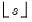
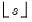

|
|
|
 is the lag operator.
is the lag operator.  is the lag operator.
is the lag operator.  will be used.
will be used. is the lag operator.
is the lag operator. and  will be used.
and  will be used.